Said Mustaf
Ahmed
Civil Engineer | Construction | Architectural & Urban Design
Click the edge or use the arrows to open
Table of Contents
Building Practical Solutions for Modern Infrastructure
Civil Engineer experienced in site engineering, construction coordination, architectural design, quantity estimation, structural design, and sustainable infrastructure projects.
Site Engineering
Construction supervision, site inspections, quality monitoring, contractor coordination, measurements, and progress tracking.
Construction & Coordination
Coordinating construction activities, contractors, subcontractors, suppliers, drawings, specifications, and documentation.
Architectural & Urban Design
Architectural drawings, building layouts, 3D visualization, spatial planning, and urban development concepts.
Sustainable Infrastructure
Professional development and project exposure in sustainable cities, renewable energy infrastructure, and resilient development.
Education
Postgraduate Diploma in Architectural & Urban Design
City University of Mogadishu
Grade: A- (87.1%)
Specialized in sustainable urban design and development, visualization and representation, architectural design studio, and integrated building systems.
Bachelor of Civil Engineering
Benadir University
GPA: 4.5 / 5.0
Focused on structural engineering, reinforced concrete design, construction management, transportation engineering, and infrastructure development.
Diploma in Architectural Engineering
Samabile Professional College
Grade: B (82.2%) | GPA: 3.5 / 5.0
Architectural design, drafting, 3D modelling, and construction drawings.
Experience
Assistant Site Engineer & Construction Coordinator
Delta Engineering & Consultants Ltd.
Full-time • On-site
Supporting civil construction supervision, labour and subcontractor coordination, quantity measurement, materials logistics, progress monitoring, and project documentation on a large-scale project.
- Site Supervision | Construction Coordination
- Quantity Measurement | Materials & Labour Coordination
Site Engineer
Kamaal Engineers Ltd.
Full-time • On-site
Managed site activities, construction supervision, inspections, quality control, contractor coordination, measurements, and project documentation.
- Site Supervision | Quality Control
- Construction Coordination | Project Documentation
Experience — Design Practice
Architectural Designer
Greenland Construction & Engineering
Part-time • Remote
Developing architectural concepts, technical drawings, 3D visualizations, and design solutions for building projects.
- Architectural Design | Technical Drawings
- AutoCAD | ArchiCAD | 3D Visualization
Engineering Skills & Technical Expertise
Combining civil engineering knowledge with practical experience in structural engineering, construction management, architectural design, GIS, quantity surveying, and sustainable infrastructure.
Structural Engineering
Reinforced concrete design, steel structures, foundation systems, slabs, beams, columns, retaining walls, and structural analysis.
Civil Engineering
Infrastructure planning, road works, drainage systems, water supply, site development, and civil construction works.
Construction Management
Site supervision, contractor coordination, construction planning, quality control, safety, scheduling, and progress monitoring.
Quantity Surveying
Quantity take-off, BOQ preparation, cost estimation, procurement, budgeting, measurements, and payment documentation.
Water Infrastructure
Elevated water tanks, water supply systems, distribution systems, hydraulic structures, sanitation works, and rehabilitation.
Sustainable Engineering
Climate-resilient infrastructure, renewable energy projects, sustainable development, and resilient practices.
Software & Technical Tools
Engineering, architectural, GIS, visualization, and project management tools used for design, planning, analysis, documentation, and construction.
Structural & Design
AutoCAD · Prokon · ProtaStructure · Autodesk Revit · ArchiCAD · SketchUp
GIS & Mapping
QGIS · ArcGIS · Google Earth Pro
Project Management
Oracle Primavera P6 · Project Scheduling · Construction Planning · Resource Management
Presentation & Documentation
Adobe Photoshop · Technical Documentation · Engineering Reports · 3D Visualization
Featured Projects
Selected civil engineering, construction, renewable energy, structural, architectural, and urban design projects.
Construction of Medical House
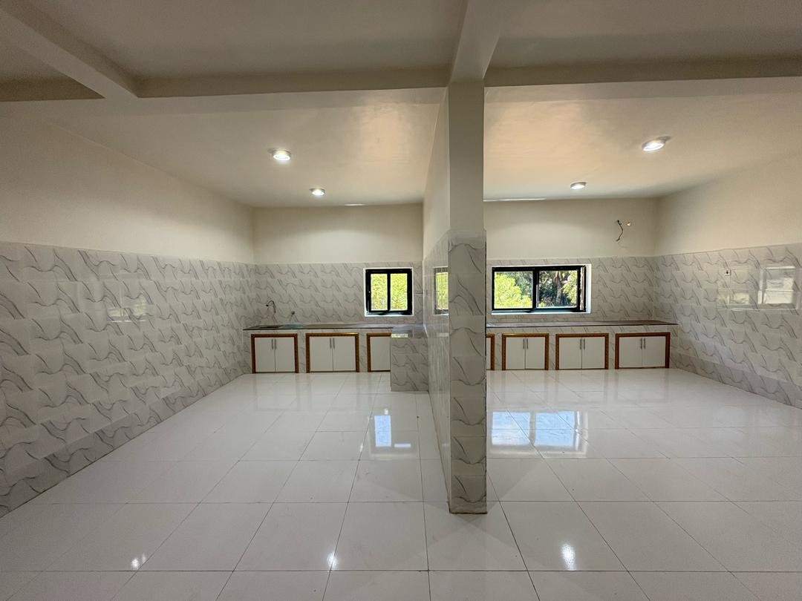
Construction of a new medical house facility for Madina Hospital, including civil works, building construction, finishing, and integration with the existing hospital environment.
- Foundation and building construction.
- Superstructure and masonry works.
- Interior and exterior finishing works.
Elevated Water Tank
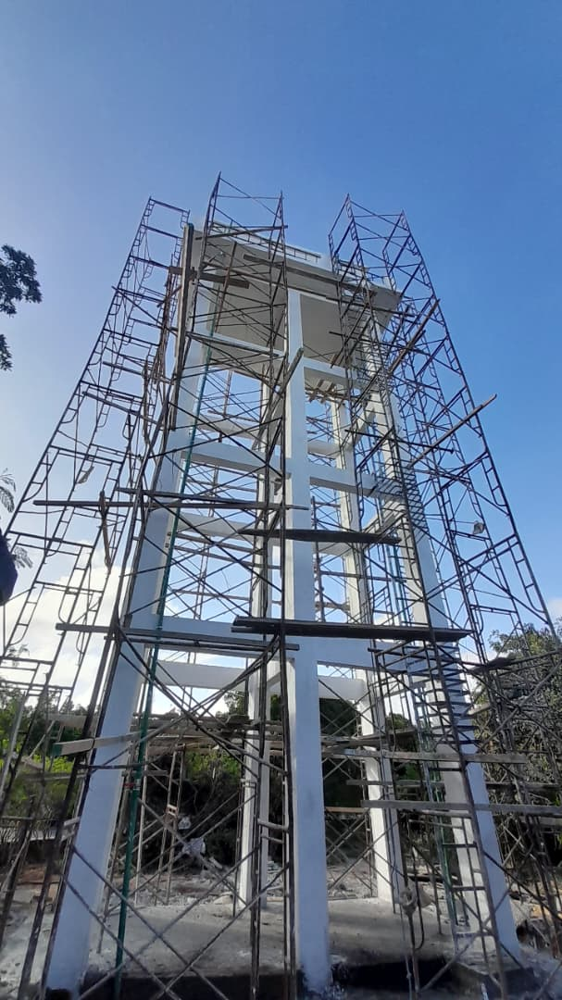
Construction of a reinforced concrete elevated water tank to support reliable water storage and supply for hospital operations.
- Reinforced concrete structural works.
- Scaffolding and elevated construction works.
- Water storage and distribution infrastructure.
Rehabilitation of Existing Elevated Water Tank
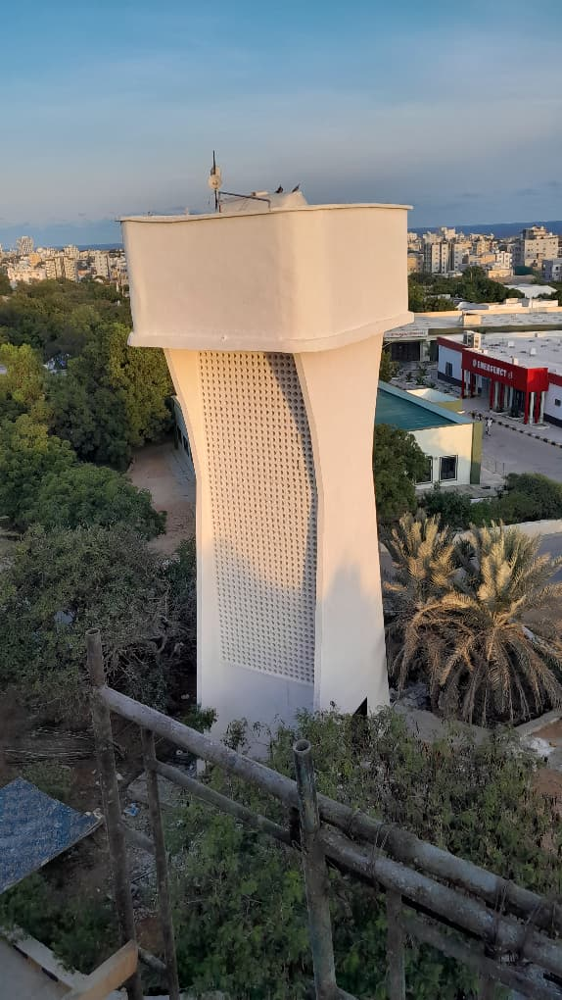
Rehabilitation of an existing elevated water tank, including repair works, waterproofing, and improvements to protect the structure and extend its service life.
- Assessment and identification of repair requirements.
- Concrete surface repair and waterproofing.
- Reinforcement protection and maintenance works.
Rehabilitation of Medical Warehouse
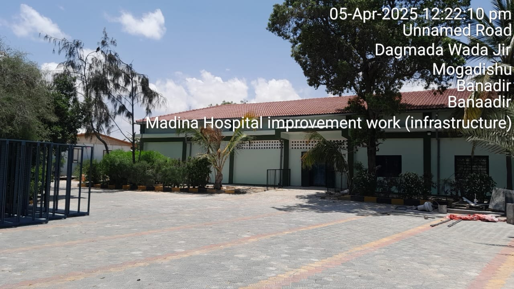
Rehabilitation and upgrading of a medical warehouse, including building repairs, roofing, flooring, wall finishing, ventilation, and general improvement of the facility.
- Roofing and building repair works.
- Flooring and wall finishing improvements.
- Ventilation and access improvements.
Large-Scale Solar PV Project
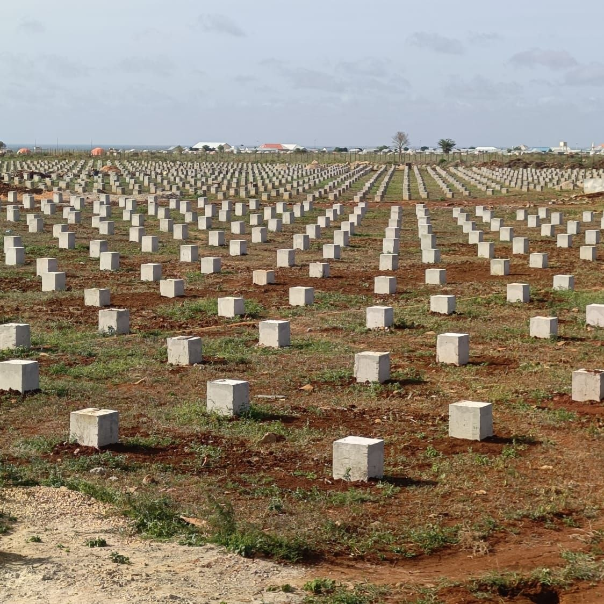
A large-scale solar photovoltaic project in Baidoa, where I support civil construction activities as an Assistant Site Engineer and Construction Coordinator.
Project Role
My role focuses on civil construction supervision, site coordination, quantity measurement, labour and subcontractor coordination, materials and logistics, and progress documentation.
Civil Construction & Site Coordination
Civil construction activities form the foundation for the installation and operation of the renewable energy infrastructure.
- Civil works supervision and site coordination.
- Labour and subcontractor coordination.
- Quantity measurement and progress records.
- Site quality and construction monitoring.
- Coordination of construction resources.
Materials, Labour & Logistics
Construction coordination includes supporting material requests, purchasing, delivery planning, labour requirements, and site logistics.
Materials
Materials requests, purchasing coordination, delivery planning, and site availability.
Labour
Labour requirements, subcontractor coordination, and construction workforce planning.
Logistics
Transport and delivery schedules supporting continuous site operations.
Progress
Monitoring progress, resources, activities, and construction documentation.
Project Site & Civil Infrastructure
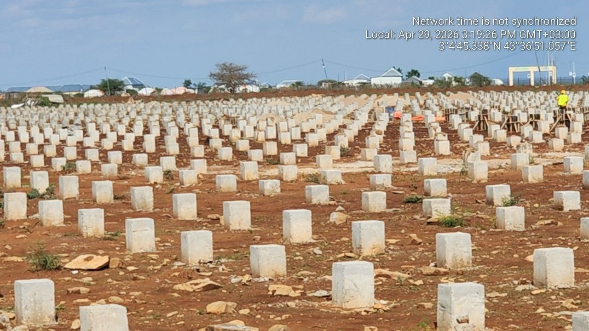
Project Site View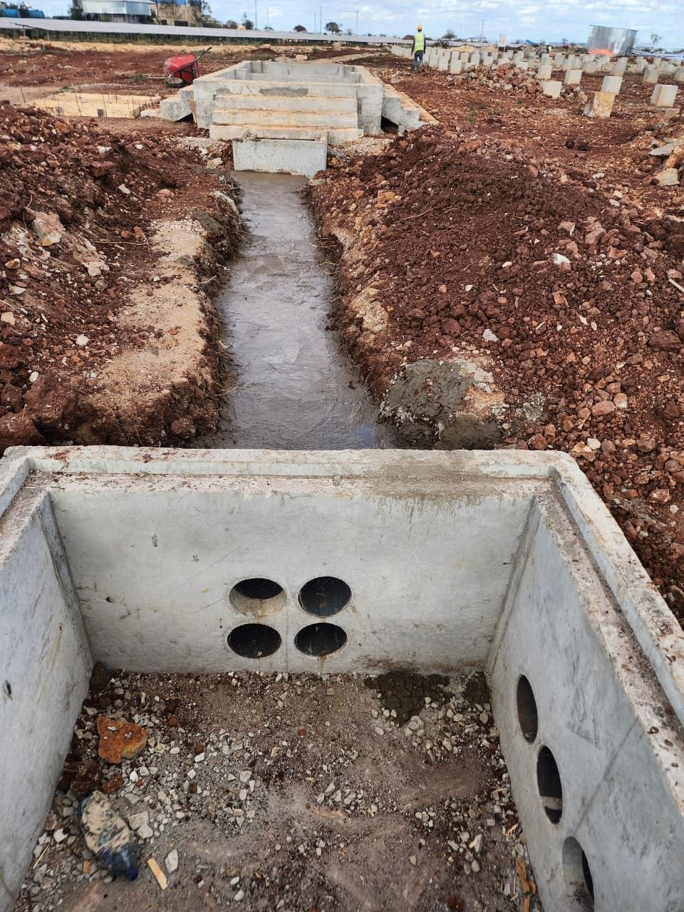
Solar Infrastructure & Civil WorksProject Team & Current Phase
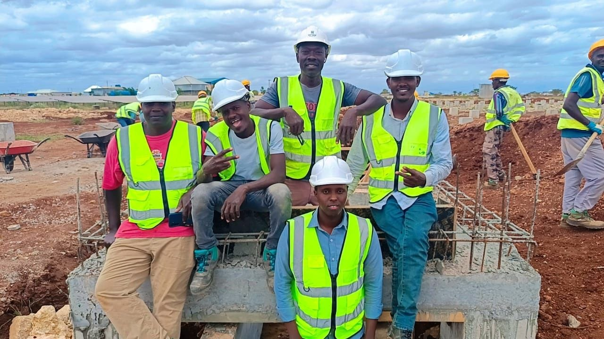
Project Team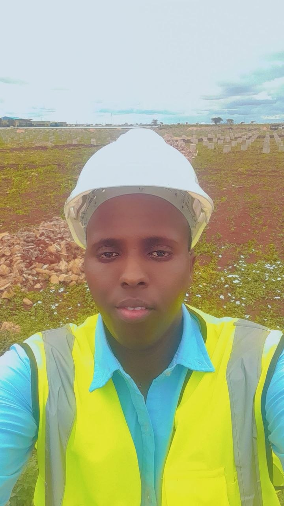
Site VisitCurrent Project Phase
Civil construction activities are progressing toward completion. The next major phase includes solar equipment and battery installation activities.
Solar Project Coordination Workflow
01 — Site Supervision
Monitor ongoing civil construction activities and coordinate daily site requirements.
02 — Measurement
Record quantities, progress, labour activities, and completed construction works.
03 — Resources
Coordinate materials, labour, transport, and subcontractor requirements.
04 — Documentation
Maintain progress records, payment records, and supporting project documentation.
05 — Coordination
Support communication between site teams, subcontractors, suppliers, and management.
06 — Next Phase
Support coordination toward solar and battery installation activities.
X-Control Afgoi Urban Development Plan
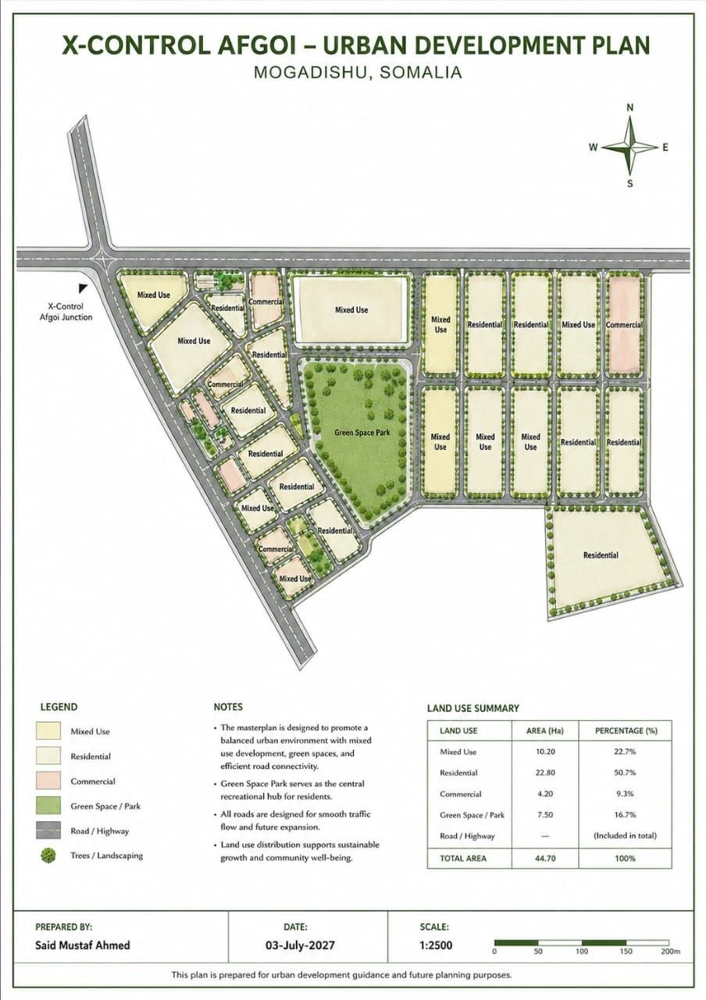
An independent urban planning and development project prepared for X-Control, Afgoi. The project focuses on understanding the existing settlement, analysing its physical conditions, and developing a practical urban development concept.
The project combines site analysis, GIS mapping, land-use planning, road network planning, 2D master planning, and 3D urban visualization.
Existing Site & Urban Context
The existing settlement was studied using satellite imagery and spatial information to establish the wider physical context of the planning area.
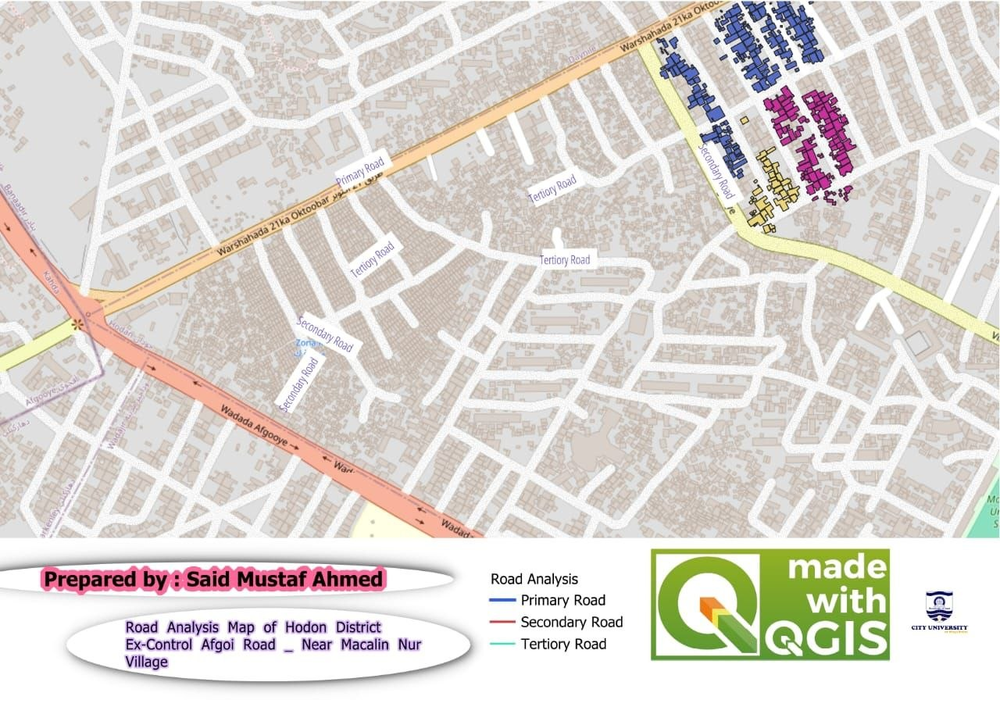
Site context provided the starting point for the following building, land-use, road, and urban development analyses.
Building Condition Analysis
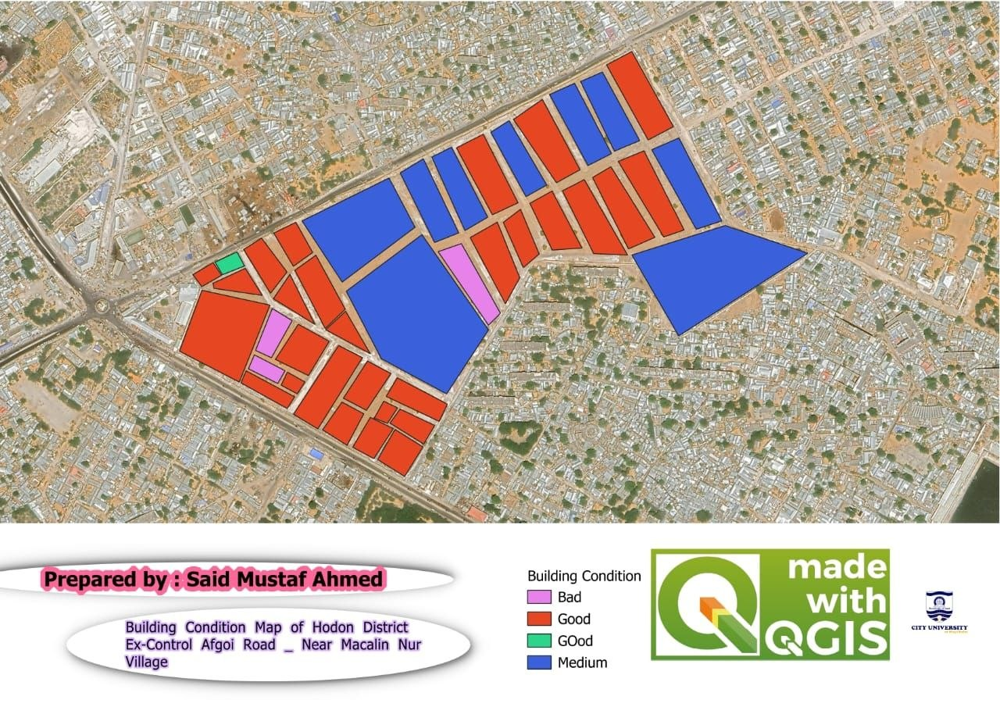
Building conditions were reviewed to understand the existing character of the settlement and identify the physical condition of existing development.
Building Height Analysis
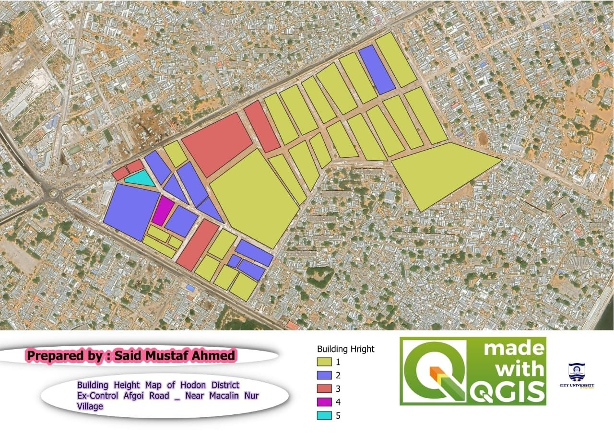
Existing building heights were analysed to understand the vertical character and development pattern of the settlement.
Existing Land Use Analysis
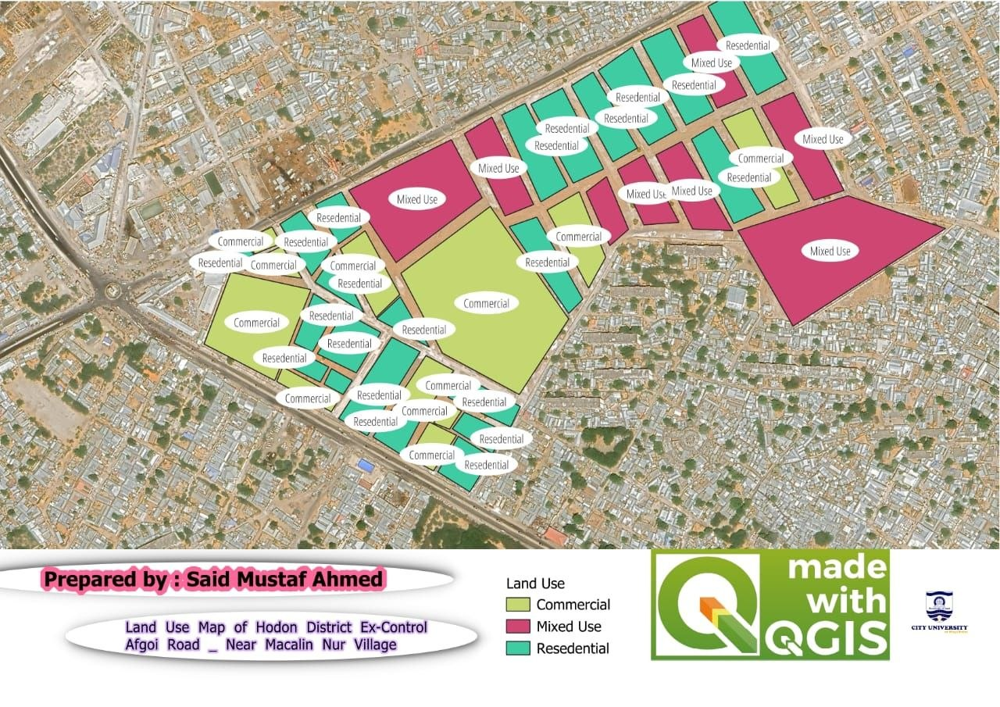
Existing land uses were reviewed to understand how residential, commercial, mixed-use, and other activities were distributed within the area.
Road & Connectivity Analysis
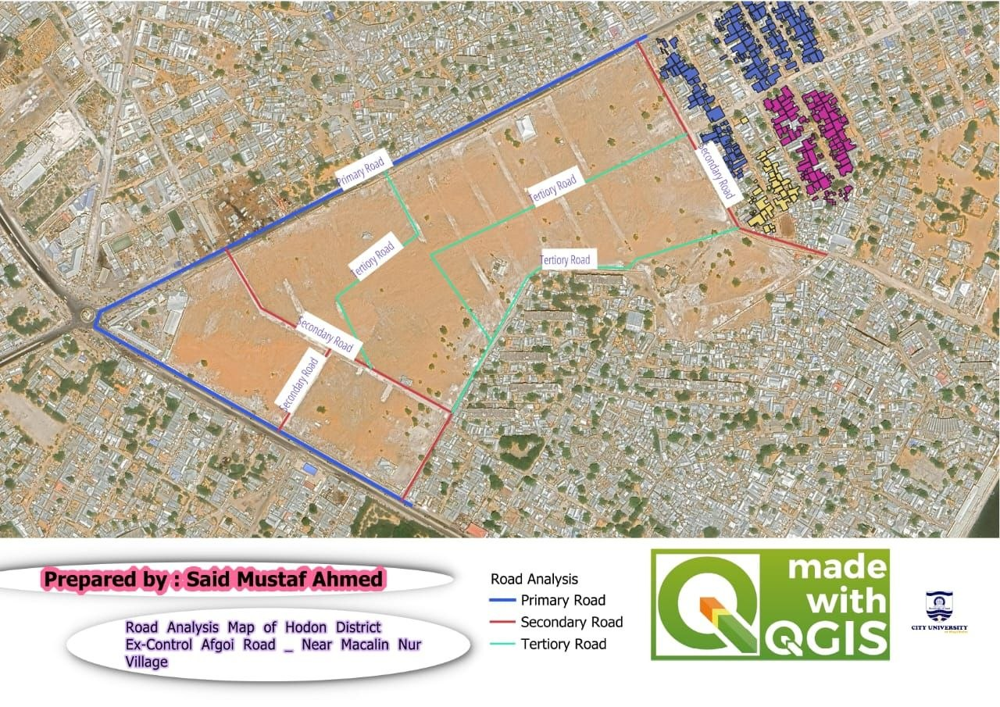
The existing road structure and connectivity were reviewed as a basis for developing a more organized urban circulation network.
Urban Planning Objectives
The proposed development concept was organized around a number of practical planning objectives.
- Analyse the existing settlement and physical conditions.
- Develop a structured urban layout and road network.
- Organize residential, commercial, and mixed-use areas.
- Identify suitable locations for community facilities.
- Introduce public parks, resting areas, and community spaces.
- Improve connectivity and overall spatial organization.
Proposed Land-Use Structure
The planning concept organizes development into clearly defined areas to support a more structured and connected urban environment.
Residential Areas
Planned residential development areas integrated with the wider street network.
Commercial Areas
Areas intended to support commercial activities and local services.
Mixed-Use Areas
Areas combining compatible urban uses within the proposed development structure.
Community Spaces
Public and community-oriented spaces supporting social activity and services.
Proposed Road Network & Connectivity
The proposed planning structure improves the organization of streets and connections between residential, commercial, mixed-use, and community areas.
Primary Connections
Main movement corridors connecting important parts of the development.
Secondary Streets
Supporting streets providing access to local development areas.
Connectivity
Improved spatial connections between different urban functions.
Community Facilities & Public Spaces
The proposed development includes community-oriented spaces intended to improve the social and public character of the urban environment.
Community Facilities
Locations for community services and facilities within the planned settlement.
Cafeteria & Gathering Areas
Spaces intended to support social interaction and community activities.
Parks
General green and public areas included within the urban development concept.
Resting Areas
Public spaces designed to provide accessible areas for rest and activity.
2D Urban Development Master Plan

The analysis was developed into a 2D urban planning layout showing the proposed road network, land-use organization, development areas, and community spaces.
3D Urban Development
The proposed urban plan was developed into three- dimensional views to communicate the planned streets, buildings, land-use areas, public spaces, and overall character of the development.
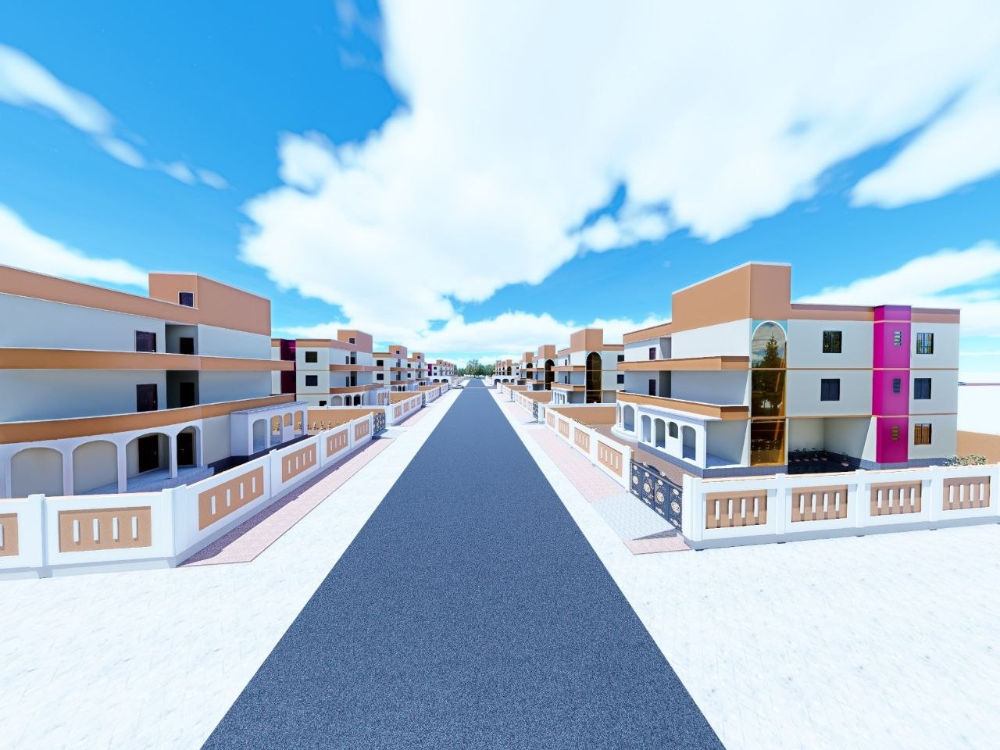
3D Urban Development View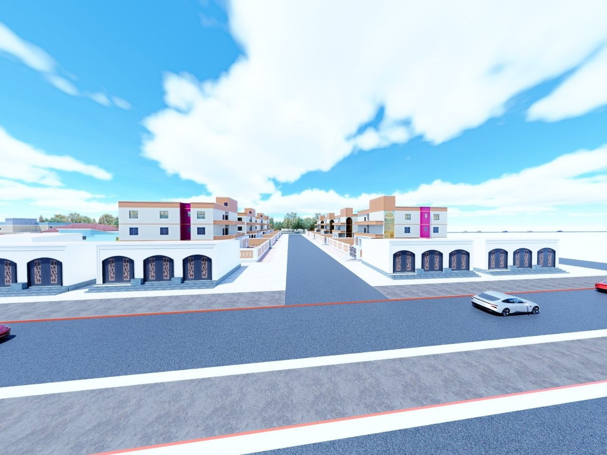
Urban Design VisualizationProject Visualization
A visual presentation showing the proposed urban development concept and representation of the planned area.
Design & Analysis Workflow
01 — Site Context
Google Earth Pro
02 — GIS Analysis
QGIS
03 — 2D Planning
AutoCAD
04 — 3D Development
ArchiCAD · SketchUp
05 — Visualization
D5 Render · Lumion
06 — Final Presentation
2D drawings, 3D views, and project video
Project Scope & Deliverables
Project Development Sequence
Existing Context → Site Analysis → Urban Objectives → Land-Use Planning → Road Network → Community Spaces → 2D Master Plan → 3D Development → Visualization
Architectural & Structural Work
3D Architectural Walkthrough
A 3D architectural visualization project demonstrating building design, modelling, materials, and presentation.
Warshadaha Residential House
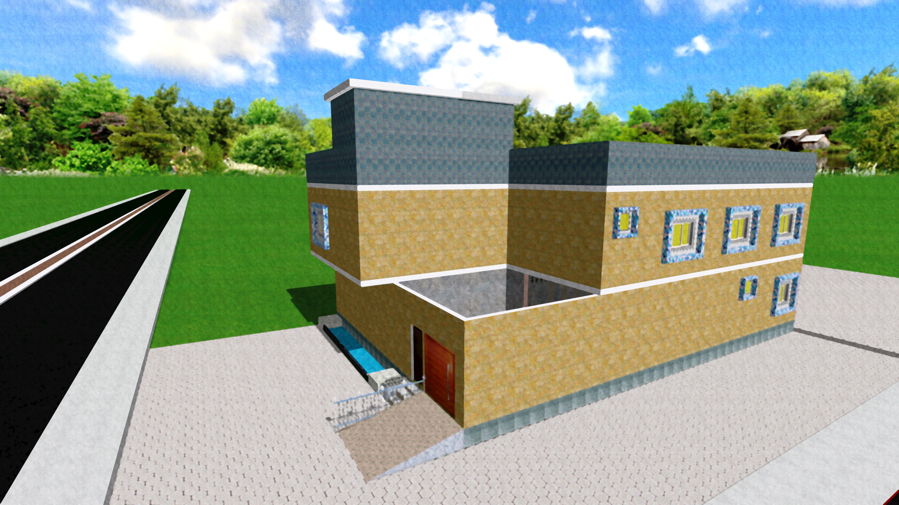
A residential house plan designed for a site in Warshadaha village, Mogadishu. The project was prepared to develop the architectural layout and to produce 3D visualization of the proposed design.
2D Architectural Plans
The ground floor plan and the typical first floor plan were drawn in AutoCAD to set out the room layout, circulation, and overall arrangement of the house.
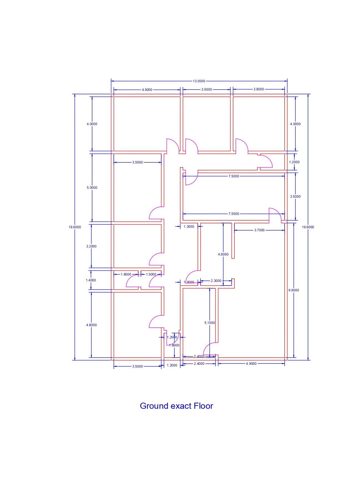
Ground Floor Plan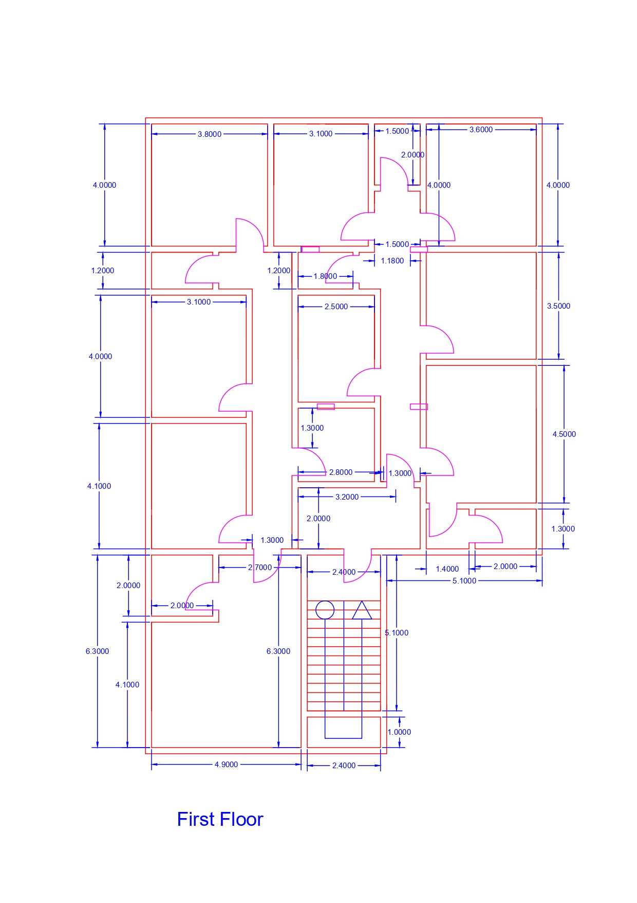
Typical First Floor Plan3D Visualization
The 2D design was developed into 3D views to show the form, materials, and overall appearance of the proposed house.
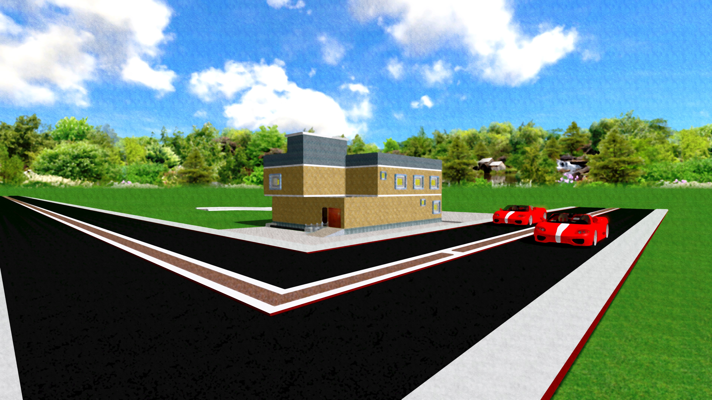
3D View 02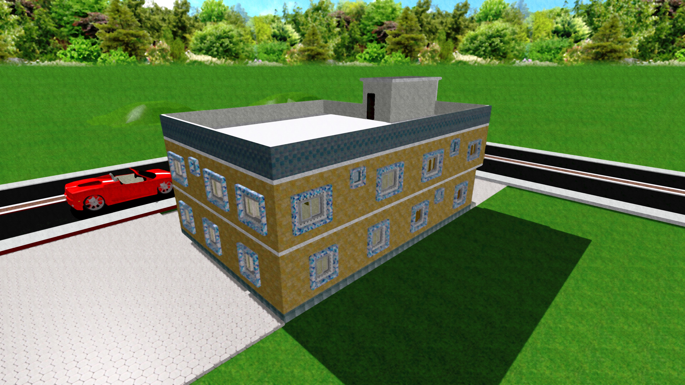
3D View 03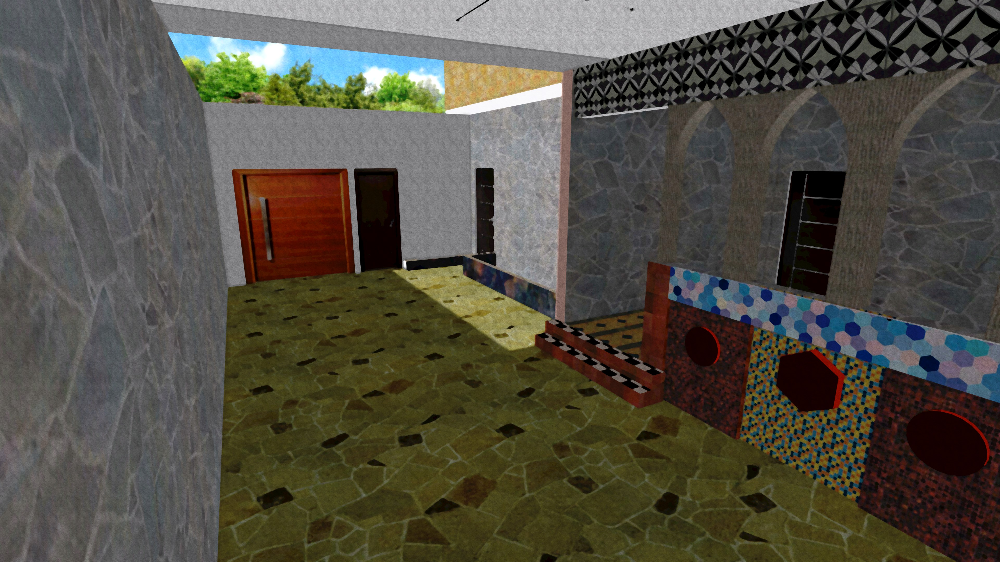
Interior ViewProject Video
A video presentation of the proposed residential house, prepared as part of the 3D visualization of the design.
G+3 Residential Building — Structural Design
A structural design project for a G+3 residential building, developed through structural planning, modelling, analysis, reinforced concrete design, and technical drawing preparation.
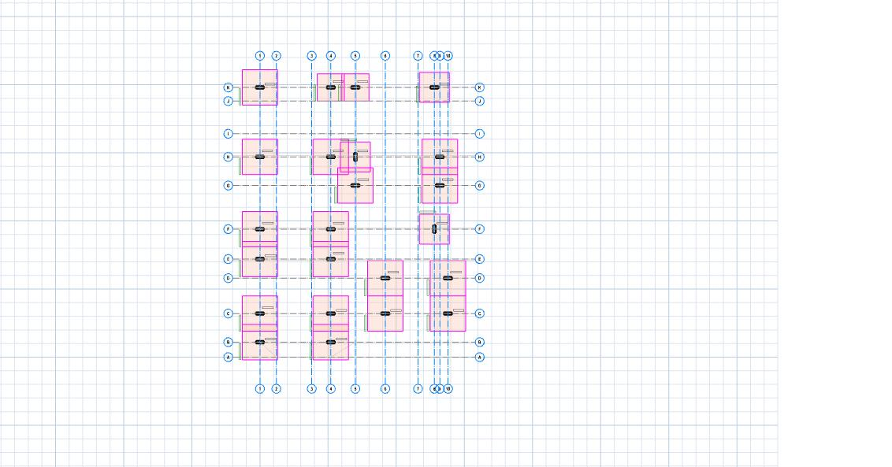
- Structural planning and modelling of the G+3 residential building.
- Structural analysis and design using ProtaStructure.
- Reinforced concrete design of slabs, beams, columns, and foundations.
- Structural detailing and preparation of technical drawings.
Software & Technical Tools
Structural Design: ProtaStructure
Technical Drawings: AutoCAD
Let's Work Together
Whether you are interested in construction, civil engineering, architectural and urban design, or a professional collaboration, I would be pleased to hear from you.
Civil Engineer | Construction | Architectural & Urban Design
Thank you for reading.
© 2026 Said Mustaf Ahmed. All Rights Reserved.